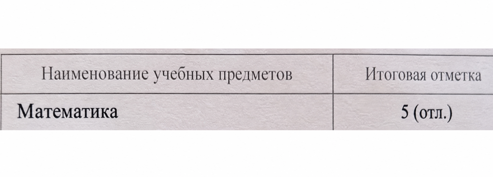

Есть долгосрочная цель
Впереди профиль, ЕГЭ 80+ и поступление в вуз. ОГЭ становится не финишем, а первым сильным этапом.
Индивидуальная подготовка девятиклассников
Математика и информатика — вместе или по отдельности. Один преподаватель и единая система для учеников, которые идут не просто «сдать ОГЭ», а строят фундамент для профиля и ЕГЭ 80+.
✓ Подойдёт сильному и трудолюбивому ученику, которому нужна уверенная пятёрка сейчас и сильная траектория дальше.
↗ На первом звонке за 10–15 минут обсудим цель, текущий уровень и поймём, подойдёт ли формат занятий.
Цель на ОГЭПятёрка без зависимости от варианта
Фундамент для профиляПервая и вторая часть как база дальше
Траектория к ЕГЭСейчас закладываем путь к 80+ баллам
Пятёрка работает дважды
По предметам ОГЭ итоговая отметка определяется как среднее арифметическое годовой и экзаменационной отметок и выставляется по правилам математического округления.
Правило применяется к обязательным предметам и предметам по выбору в соответствии с действующим порядком выдачи аттестатов.
Точное попадание в цель
Я работаю не на минимальный порог. Мы ставим цель, разбиваем её на блоки и собираем сильную базу в систему.
Впереди профиль, ЕГЭ 80+ и поступление в вуз. ОГЭ становится не финишем, а первым сильным этапом.
Ребёнок может хорошо знать предмет, но тревожиться: подтвердится ли пятёрка на реальном экзамене?
Математика, информатика или оба экзамена: цель ставим отдельно по каждому предмету и блоку заданий.
Здесь всё по полочкам
На каждом этапе есть понятная цель: первая часть без потерь, вторая часть как преимущество, отдельные блоки по алгебре, геометрии и информатике. Никакой гонки по случайным вариантам.
Удобный онлайн-формат
Работаем на совместной онлайн-доске: преподаватель и ученик одновременно видят решение, записи и комментарии.
Работаем вместеРешения появляются на доске прямо во время урока.
Всё сохраняетсяУченик может вернуться к заданиям и повторить материал.
Родителю понятноВидно, что пройдено и над чем ребёнок работает сейчас.
Диагностика вместо догадок
Сильный ученик может годами обходить одно непонятое место. На обычных уроках это почти незаметно — на экзамене именно оно забирает баллы.
Узнать, где теряются баллы →Находим скрытый пробелНе повторяем всё подряд — проверяем, где ломается логика.
Исправляем пониманиеРазбираем причину ошибки и закрепляем новым способом.
Возвращаем баллыОтрабатываем тему в заданиях и проверяем результат.
Единая система
Без хаотичных подборок заданий. Каждый этап отвечает на вопрос: что уже получается и что даст следующий балл.
Проверяю первую и вторую части, нахожу сильные темы и реальные пробелы.
Расставляем темы по приоритету: от потери лёгких баллов к сложным заданиям.
Два занятия в неделю, обязательная домашняя работа и нужный объём практики.
Регулярно сверяем динамику и корректируем план до устойчивого результата.
Обращение к родителям девятиклассников
Если вам важны система, понятный план и прозрачный прогресс ребёнка, начните действовать сейчас. На первом разговоре за 10–15 минут определим текущий уровень, выберем математику, информатику или оба предмета и поймём, подойдёт ли ребёнку мой формат.
Хотите узнать, почему ребёнок с пятёркой по математике всё равно боится ОГЭ? Позвоните — разберём спокойно и по делу.
Индивидуальные занятия: вы видите, что пройдено, где ребёнок теряет баллы и как меняется результат.
Количество мест ограничено индивидуальным форматом работы.моих учеников получают оценку 5 на ОГЭ
Результат зависит от стартовой базы, регулярности и выполнения программы.Ученик полностью решил вторую часть и показал максимум на экзамене — без потери баллов на заданиях, которые действительно умел решать.
У ученицы была одна неправильно понятая тема. Мы нашли её, перестроили понимание и закрепили результат практикой.
Сегодня пробник написан на 5, а завтра — едва на 3. Ребёнок не понимает причину и думает: «А вдруг на ОГЭ попадётся сложный вариант?»
Что делаем: решаем серию из 10 вариантов и собираем статистику по каждому номеру. График показывает повторяющийся провал. Находим причину, точечно отрабатываем задание и снова проверяем навык на разных вариантах.
Ученик хорошо знает материал, но действует по привычке: решил — и сразу пошёл дальше. Из-за одной случайной ошибки теряются баллы, которые он мог сохранить.
Что делаем: учим заранее закладывать подстраховку: ключевое задание решать вторым способом или проверять ответ подстановкой, обратным действием и оценкой результата.
Решить
задание
Проверить
иначе
Сохранить
балл
Набор на индивидуальные занятия
Не уверены, выдержит ли ребёнок экзамен на 5? Хотите понять, почему по информатике сложнее удержать пятёрку в формате КОГЭ? Позвоните сейчас: обсудим выбранный предмет или оба экзамена и поймём, подойдёт ли ребёнку моя система подготовки. Если неудобно звонить — напишите в MAX «Перезвоните», и я сама свяжусь с вами.